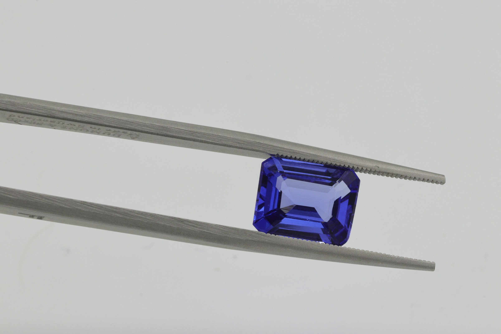
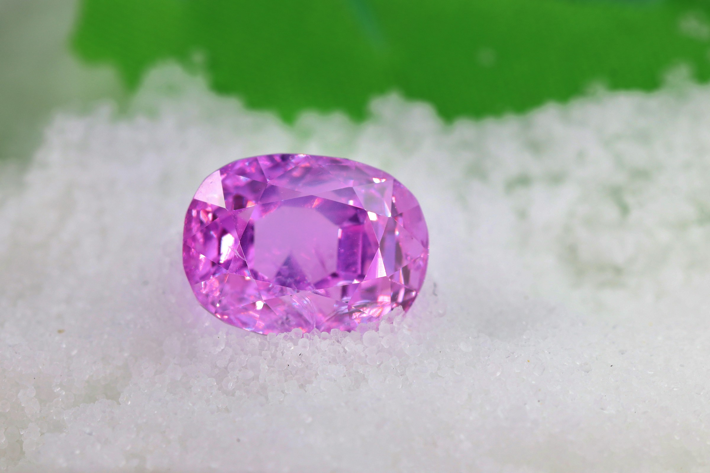
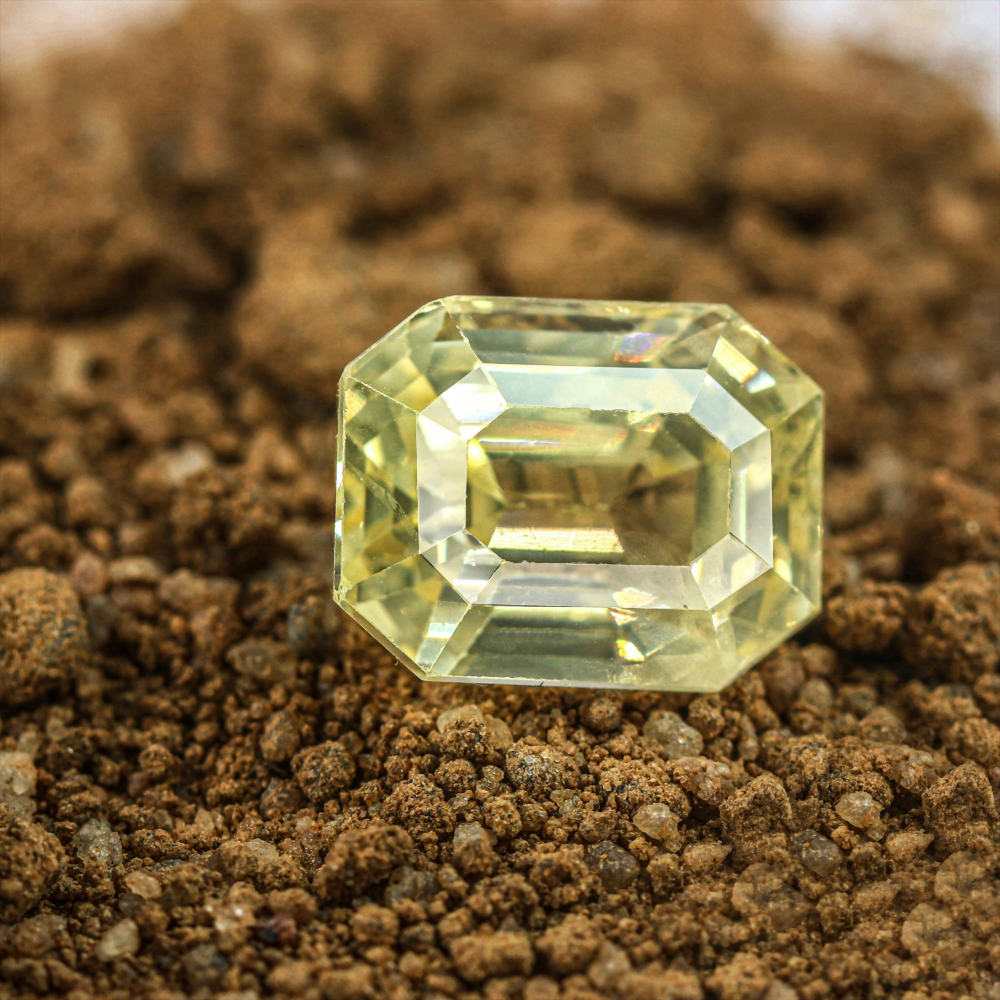

IC-101Sample data
Blue, step cut
Weight, size, treatment and lab go here, from the house's own records.

A gem house in Sri Lanka
Loose Ceylon sapphires with a report you can check and finished pieces built around them. Every stone is shown in daylight on a video call before anyone talks about money.
The finished piece appears once a matched piece is photographed.
Every piece here begins with a stone, chosen loose, shown in daylight with its report in frame and only then set.
The house's own words go here once they are given. Nothing above is a claim about its history.

Choose up to three and a person turns each one in daylight on a call, report in frame. A viewing does not reserve a stone. Nothing is priced on this page.